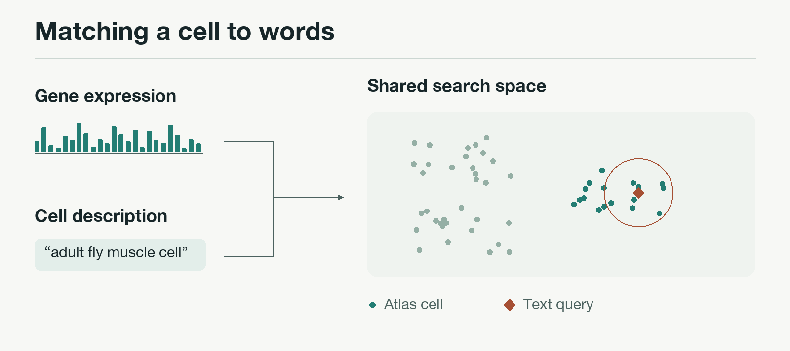

FlyCellWhisperer

Motivation
A fly cell atlas records which genes are active in individual cells. A biologist might come to the atlas with a phrase like “adult fly muscle cell,” without knowing which genes to search for. We wanted to make that phrase a starting point for finding cells and, in the other direction, to see which descriptions fit an unfamiliar expression profile.
Prior work
The Fly Cell Atlas maps cell types across the adult fruit fly, and the Aging Fly Cell Atlas follows those tissues across the lifespan. Both pair gene-expression profiles with expert annotations. CellWhisperer showed how a model trained on human expression data and accompanying text could learn to search across the two. We adapted that idea to the vocabulary and annotations of the fly atlases.
What we delivered
We built FlyCellWhisperer to match fly cells with descriptions of their identity and tissue. Our code pairs expression profiles with captions, trains the two representations together, and tests retrieval on held-out cells. It also compares cell encoders and training-set sizes, so we can ask which choices help the model recover an atlas annotation.